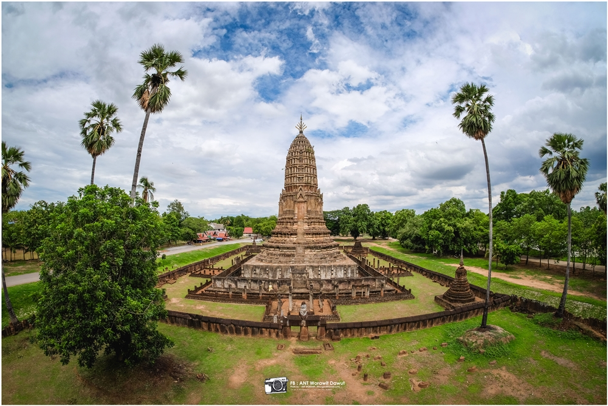
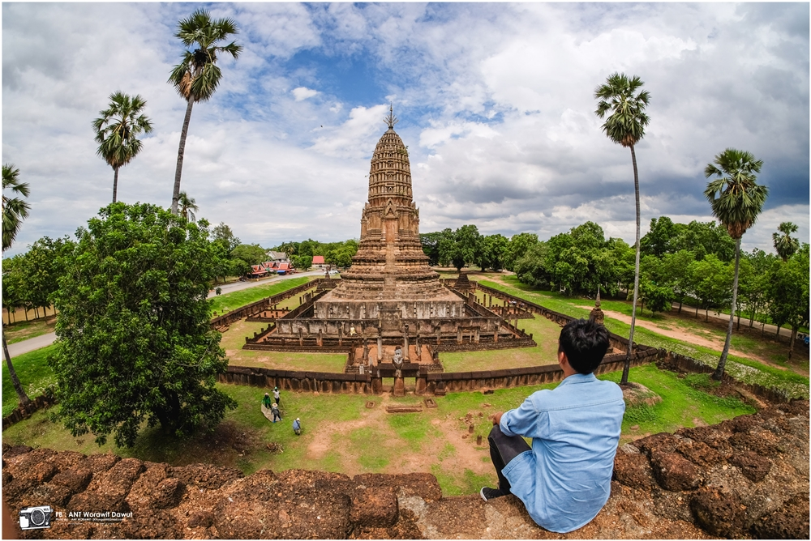
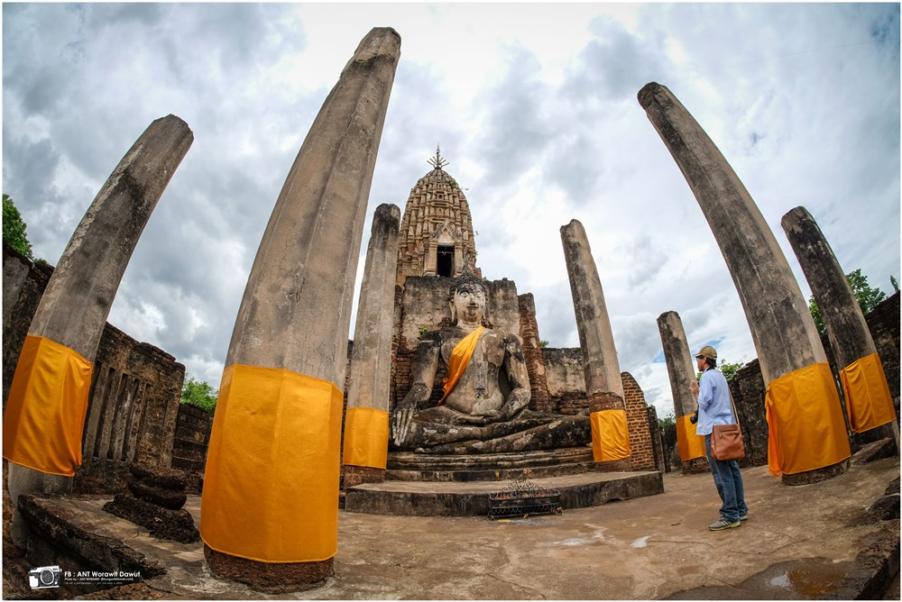

วัดพระปรางค์

วัดพระปรางค์
วัดนี้มีอายุตั้งแต่สมัยขอมเรืองอำนาจ คือ ประมาณ 800 ปีมาแล้วเป็นอย่างต่ำ ซึ่งความจริงอาจสามารถกำหนดอายุได้มากกว่านี้เพราะที่ตั้งของวัดมีลักษณะเป็นศูนย์กลางของชุมชนหรือเมืองบริเวณนี้ คือ เมืองเชลียง ซึ่งเป็นเมืองที่มีชีวิตอยู่ร่วมสมัยกับยุคทวารวดี วัดนี้เป็นวัดสำคัญของเมืองเชลียง ปรากฏหลักฐานแน่ชัดในศิลาจารึกหลักที่ 1 และในสมัยกรุงธนบุรี เมื่อสมเด็จพระเจ้าตากสินมหาราชเสด็จไปปราบชุมนุมพระฝางเมืองสวางคบุรี แล้วได้เสด็จสมโภชพระบรมธาตุเมืองเชลียงนี้ด้วย และวัดนี้ยังเป็นที่สรงน้ำมูรธาภิเษก สำหรับพระเจ้าแผ่นดินใหม่ที่จะขึ้นเสวยราชสมบัติมาแต่ครั้งโบราณกาลโบราณสถานภายในวัด
- ปรางค์ประธาน
- องค์พระปรางค์พระศรีรัตนมหาธาตุ
- พระอุโบสถ
- กำแพงแก้ว


สถานที่ตั้ง
-
หมู่ 6 ตำบลศรีสัชนาลัย อำเภอศรีสัชนาลัย จังหวัดสุโขทัย